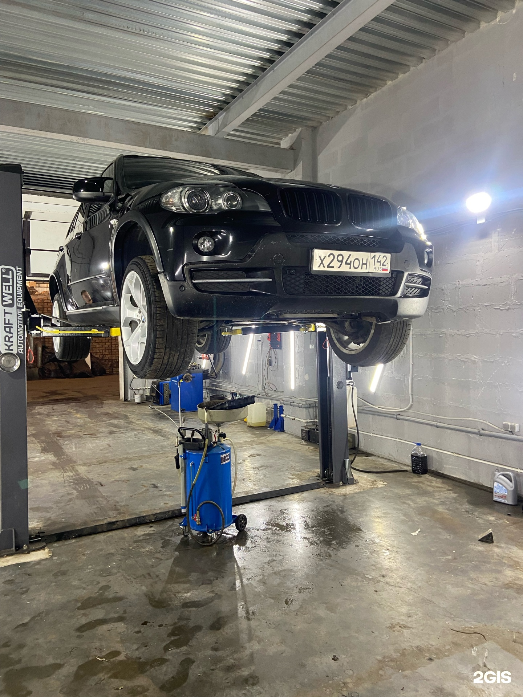
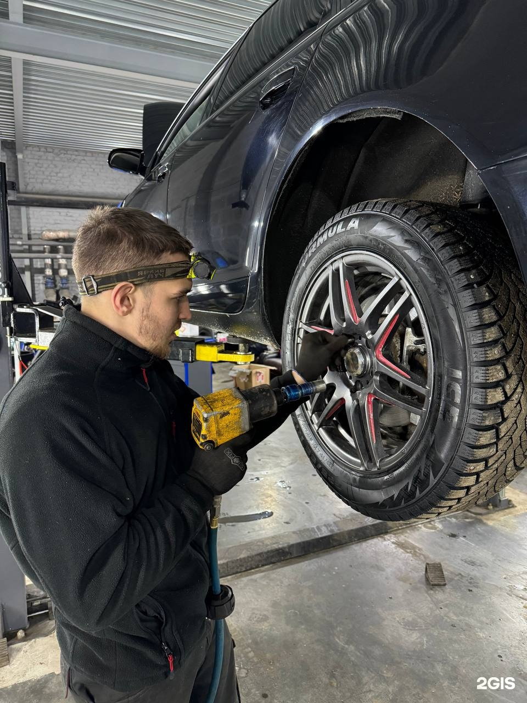
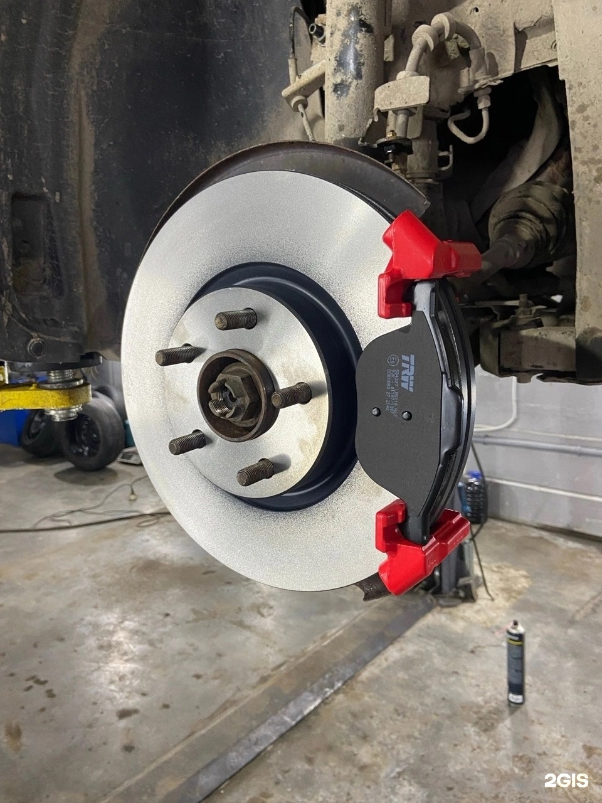

Один из посетителей отмечает отзывчивость сотрудников, помощь с автомобильными вопросами и удобную связь с сервисом.
Полный отзыв в 2ГИСЦентр
Tes Auto
Шиномонтаж, ремонт подвески и работы с салоном
+7 (921) 703-37-77ТелефонРемонт ходовой и пневмоподвески, перетяжка и шумоизоляция салона. Выездной шиномонтаж уточните по телефону.
Адрес
Псков, Иркутский переулок, 2Б
Часы работы
Пн–Вс 09:00–19:00; по предварительной записи: сб-вс

Демо-концепт · текущий прайс ещё не подтверждён
Направления
С чем можно обратиться
Ремонт ходовой части автомобиля
Ремонт пневмоподвески
Шиномонтаж
Выездной шиномонтаж
Перетяжка салона
Шумоизоляция салона
Прайс
Услуги и цены
Фотографии
Кадры из ремонтного бокса
Фотографии из карточки бизнеса. Снимки не подтверждают актуальность цен.


Отзывы
Что отмечают посетители
Приехавший в Псков клиент рассказывает, что автомобиль с неисправностью тормозных колодок приняли оперативно, а нужные детали подобрали в сервисе.
Полный отзыв в 2ГИСВ другом отзыве описывают помощь после внезапной неисправности в дороге, заказ детали и понятные объяснения.
Полный отзыв в 2ГИСПересказ субъективных мнений без имён авторов. Полные отзывы — в 2ГИС.
Контакты
Адрес и связь
Часы работы
Пн–Вс 09:00–19:00; по предварительной записи: сб-вс
Телефон+7 (921) 703-37-77
Обсудите ремонт или выездной шиномонтаж
Позвонить